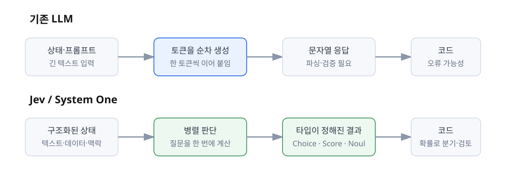
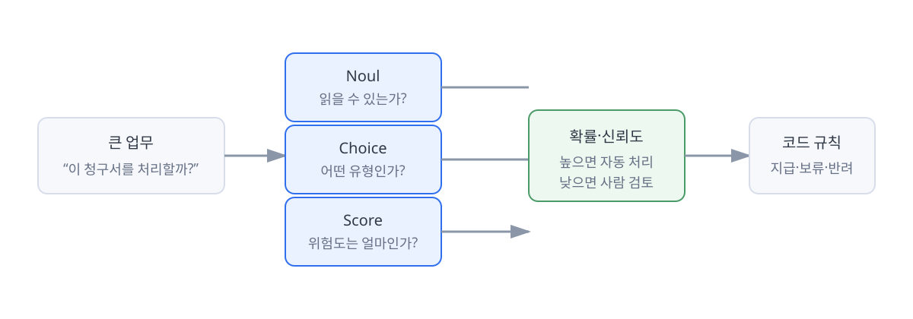

Jev를 직접 써보고 정리한 System One 모델
Jev를 써보며, AI는 답변보다 판단에 가까워질 수 있겠다고 생각했다
텍스트를 생성하는 모델과 소프트웨어가 바로 사용할 수 있는 판단 모델은 무엇이 다른지 살펴봤다.
Jev를 직접 써보며 가장 크게 느낀 것은 비용 효율이었습니다. 알아볼수록 Jev는 더 싸고 빠른 LLM이라기보다, 소프트웨어가 바로 사용할 수 있는 타입이 정해진 판단을 반환하는 모델에 가까웠어요.
최근 AI 업계에서 Jev라는 모델이 꽤 크게 화제가 됐습니다. 저도 궁금해서 동료분이 먼저 신청해 받은 계정에 초대받아 직접 써보고 있었어요.
Jev로 만들어진 여러 사례도 찾아봤습니다. 게임 속 캐릭터를 움직이거나, 코딩 에이전트의 결과를 판단하거나, 고객 문의와 청구서를 처리하는 식의 사례들이었어요. 사용해보면서 가장 먼저 느낀 점은 단순했습니다. 비용 효율이 정말 좋다는 것이었죠.
그런데 Jev를 더 알아볼수록 이 모델은 “더 싸고 빠른 LLM”으로만 설명하기 어렵다는 생각이 들었습니다. 텍스트를 길게 생성하는 대신, 소프트웨어가 바로 사용할 수 있는 형태의 판단을 돌려주는 모델에 가까웠거든요. 이번 글에서는 제가 이해한 Jev의 구조를 정리하고, 직접 써보며 느낀 점을 덧붙여보려고 합니다.
Jev는 챗봇이 아니라 소프트웨어를 위한 판단 모델이다
TypeSafe는 Jev를 자사의 첫 번째 System One 모델이라고 설명합니다. 이름은 대니얼 카너먼의 ‘빠르고 직관적인 System 1’과 ‘느리고 숙고하는 System 2’의 구분에서 가져왔다고 해요.
여기서 System One은 단순히 생각을 짧게 하는 모델이라는 뜻은 아닙니다. 핵심은 모델의 소비자가 사람인지, 소프트웨어인지에 있습니다.
기존 LLM은 사람이 읽을 문자열을 만드는 데 최적화되어 있습니다. 질문을 넣으면 문장을 이어서 생성하고, 그 문장 안에 설명·코드·JSON을 담아 돌려주죠. 소프트웨어가 그 결과를 사용하려면 다시 파싱하고, 스키마를 검증하고, 예상하지 못한 응답이 나왔을 때를 처리해야 합니다.
Jev는 이 방향을 거꾸로 잡습니다. 자연어로 된 상태나 데이터를 입력받되, 결과는 미리 정해둔 타입의 값으로 반환해요. TypeSafe가 표현하는 방식대로라면 정리되지 않은 상태를 넣고, 타입이 정해진 확률적 판단을 받는 함수 호출에 가깝습니다.

이 차이는 겉으로 보면 작아 보입니다. 하지만 AI를 소프트웨어 내부에 넣으려 할 때는 꽤 큽니다. 챗봇에서는 문장이 조금 어색해도 사람이 다시 읽으면 되지만, 결제 승인이나 보안 경보처럼 다음 코드가 바로 실행되는 곳에서는 출력의 모양과 불확실성을 함께 다뤄야 하니까요.
텍스트 대신 확률과 타입을 반환한다
제가 처음 “확률로 주는 것 같다”고 느낀 부분도 여기에 해당합니다. 조금 더 정확히 말하면 Jev는 질문의 종류에 따라 정해진 선택지와 그에 대한 확률·confidence를 반환합니다.
공식 워크플로 설명에는 크게 세 가지 질문 형태가 나옵니다.
- Noul: 예·아니오처럼 이진 판단을 하고 확률을 반환하는 질문
- Choice: 여러 선택지 중 하나를 고르고, 선택지별 분포와 confidence를 반환하는 질문
- Score: 어떤 정도나 위험 수준을 점수로 평가하고, 점수 분포와 confidence를 반환하는 질문
예를 들어 “이 청구서를 지급해도 되는가?”를 한 번에 물어 긴 답변을 받는 대신, 영수증을 읽을 수 있는지, 계약 조건과 맞는지, 중복 지급은 아닌지 같은 작은 질문으로 나눌 수 있습니다. 각 질문의 결과가 모이면 코드가 최종적으로 지급·보류·반려 같은 행동을 결정하고요.
여기서 확률과 confidence를 같은 말로 이해하면 조금 헷갈립니다. 선택지 자체에 대한 확률이 있고, 그 판단을 얼마나 믿을 수 있는지 나타내는 confidence가 따로 있을 수 있어요. 중요한 것은 모델이 “정답은 이것”이라고만 말하는 대신, 얼마나 확신하는지까지 응답의 일부로 돌려준다는 점입니다.
이런 출력은 사람이 읽기 위한 답변으로는 심심할 수 있습니다. 반대로 소프트웨어 입장에서는 훨씬 유용하죠. 확률이 0.95 이상이면 자동 처리하고, 0.6이면 사람에게 넘기고, 여러 판단이 충돌하면 검토 큐로 보내는 식의 규칙을 코드로 만들 수 있으니까요.
Jev가 잘하는 일은 답을 대신 말하는 것이 아니라, 코드가 다음 행동을 선택할 수 있도록 판단의 형태를 바꿔주는 일에 가깝다.
빠르고 저렴한 이유는 문자열을 포기했기 때문이다
Jev의 비용 효율은 단순히 모델 크기를 줄여서 얻은 결과로 보이지 않습니다. TypeSafe가 설명하는 차이는 크게 두 가지입니다.
첫째, 기존 LLM은 토큰을 하나씩 순서대로 생성합니다. 앞에서 만든 토큰을 다음 토큰의 입력으로 삼는 방식이죠. 문장을 자유롭게 만들 수 있다는 장점이 있지만, 길게 생성할수록 시간과 출력 비용이 함께 늘어납니다.
반면 Jev는 정해진 결과를 병렬로 샘플링하는 방향을 택합니다. 문장을 한 토큰씩 이어 붙일 필요가 없으니, 질문에 대한 여러 판단을 한 번의 호출에서 처리할 수 있어요.
둘째, 결과 문자열을 생성하지 않습니다. 출력해야 할 구조가 미리 정해져 있으니, JSON처럼 생긴 문자열을 생성한 뒤 다시 해석하는 과정도 줄어듭니다. TypeSafe는 이것을 새로운 아키텍처, 병렬 샘플러, RLCD라는 학습 방식이 함께 구성하는 스택으로 설명하고 있습니다.
공식 발표 글에는 Jev가 System One 작업에서 기존 LLM과 비슷한 수준의 지능을 보이면서 70~500ms 정도의 응답 시간과 더 낮은 비용을 목표로 한다고 적혀 있습니다. 홈페이지의 193.6배 빠르고 444.6배 저렴하다는 수치는 회사가 공개한 특정 워크플로 평가에서 나온 주장이고, 모든 종류의 작업에 그대로 적용되는 일반적인 법칙은 아닙니다. 이 부분은 제 사용 경험과도 연결됩니다. 텍스트를 길게 뽑는 모델과 비교하면 확실히 “이 정도 비용으로 이 판단을 반복해도 되나?” 싶은 느낌이 들었거든요.
다만 문자열을 포기했다는 것은 할 수 있는 일을 줄였다는 뜻이기도 합니다. 자유로운 글쓰기, 긴 설명, 복잡한 코드 생성이 목적이라면 Jev가 맞지 않을 수 있어요. 대신 분류·라우팅·추출·검사·분기처럼 결과의 모양을 정할 수 있는 작업에 집중합니다.
RLHF 대신 calibration을 학습의 북극성으로 삼는다
Jev를 이해하려면 학습 방식의 차이도 봐야 합니다.
우리가 익숙하게 알고 있는 대화형 LLM은 RLHF, 즉 사람의 선호를 반영한 강화학습을 거칩니다. 사람이 더 좋아할 만한 답변, 더 친절하고 자연스러운 답변을 만들도록 최적화하는 방식이에요. 이 학습 덕분에 모델은 대화와 지시 따르기에 매우 강해졌지만, 소프트웨어가 그대로 의존하기에는 문제가 남습니다. 그럴듯한 문자열, 과도한 확신, 거절이나 아첨처럼 사람과의 대화에는 유용해도 자동화 흐름에는 걸림돌이 될 수 있는 특성이 함께 생기기 때문입니다.
Jev가 내세우는 RLCD는 Reinforcement Learning for Calibrated Decisions의 줄임말입니다. 사람의 선호나 정답을 맞혔는지만 보는 것이 아니라, 판단의 정확도와 자신감이 얼마나 맞아떨어지는지를 학습의 중심에 놓는다는 설명입니다.
예를 들어 어떤 분류를 100번 했을 때 실제로 80번 맞혔다면, 모델이 모든 답에 99% confidence를 붙이는 것보다 대체로 80%에 가까운 신뢰도를 보여주는 편이 자동화에 더 쓸모 있습니다. 틀릴 때 틀릴 가능성을 어느 정도 드러내야 코드가 사람 검토로 넘길 수 있으니까요.
물론 calibration이 좋다고 해서 틀리지 않는 것은 아닙니다. 확률이 잘 보정되어 있다는 것은 높은 confidence의 판단이 평균적으로 더 정확하다는 뜻이지, 개별 답변의 정답을 보증한다는 뜻은 아니에요. 이 구분이 Jev를 과장 없이 이해하는 데 중요해 보였습니다.
중요한 것은 모델 하나가 아니라 워크플로다
Jev에 관한 공식 평가를 찾아보며 인상적이었던 부분은 모델 하나에 모든 일을 시키지 않는다는 점이었습니다. TypeSafe의 워크플로 평가는 큰 업무를 작은 판단 질문과 일반 코드 규칙으로 분해합니다.
청구서 처리라면 모델에게 “이 청구서를 처리해줘”라고 한 번에 맡기지 않습니다. 문서를 읽을 수 있는지, 어떤 유형인지, 계약 조건과 맞는지, 중복인지, 위험도는 어느 정도인지 각각 묻습니다. 금액 계산이나 날짜 비교처럼 코드가 더 잘하는 일은 코드로 처리하고, 자연어 해석이나 판단이 필요한 부분만 모델에 맡겨요.

이 방식은 Jev만의 전유물은 아닙니다. 어떤 LLM을 사용하더라도 복잡한 업무를 작은 단계로 나누면 더 안정적인 결과를 얻을 수 있죠. 다만 Jev는 이 구조를 전제로 설계됐다는 점이 다릅니다. 질문의 타입과 결과의 확률이 API의 중심에 있고, 작은 판단들을 코드 안에서 조합하는 것이 자연스럽게 되어 있어요.
결국 자동화의 품질은 모델의 똑똑함만으로 결정되지 않습니다. 무엇을 질문으로 쪼갤지, 어느 단계는 코드로 처리할지, 어떤 confidence에서 사람에게 넘길지까지 포함한 워크플로 설계가 함께 중요합니다.
직접 써보며 느낀 Jev의 가능성과 한계
저는 동료분의 초대를 받아 Jev를 사용해봤습니다. 대단히 복잡한 서비스를 새로 만든 것은 아니지만, 몇 가지 사례를 따라가고 직접 호출해보면서 기존 LLM과는 확실히 다른 인상을 받았어요.
가장 크게 느낀 차이는 비용이었습니다. “이 정도의 판단을 이 비용으로 계속 호출해도 괜찮겠다”는 감각이 있었어요. 지금까지는 AI를 업무 흐름에 넣을 때마다 호출 비용과 응답 시간을 먼저 걱정했습니다. 특히 반복적으로 많은 데이터를 읽고 분류하거나, 에이전트의 실행 결과를 검사하는 작업은 모델이 아무리 좋아도 비용이 부담될 수밖에 없었고요.
Jev는 그런 작업에 AI를 더 자주 넣어볼 수 있게 해준다는 점에서 매력적이었습니다. 모델이 모든 것을 대신하는 것이 아니라, 시스템 곳곳에 작은 판단을 심는 느낌에 가까워요. TypeSafe가 말하는 “AI가 소프트웨어 안으로 사라진다”는 표현도 그래서 이해됐습니다.
반대로 이 모델이 모든 LLM을 대체할 것이라고 생각하지는 않습니다. Jev가 잘 작동하려면 먼저 문제를 선택지와 점수, 이진 판단으로 표현할 수 있어야 하고, 그 판단들을 조합할 코드도 필요합니다. 질문을 잘못 만들거나 중요한 맥락을 빼먹으면 빠르고 저렴하게 틀리는 시스템이 될 수 있겠죠.
또 하나는 공개된 초기 자료의 한계입니다. TypeSafe가 공개한 비용·속도·정확도 비교는 흥미롭지만, 평가 워크플로와 기준 모델을 회사가 설계했다는 점을 함께 봐야 합니다. 실제 운영에서 얼마나 안정적으로 calibration이 유지되는지, 다양한 도메인과 긴 맥락에서 어떤 약점이 나오는지는 더 많은 사용 사례가 쌓여야 알 수 있을 것 같아요.
AI를 ‘대화 상대’에서 ‘판단 부품’으로 보기
Jev를 공부하고 직접 써보면서 제 관점도 조금 바뀌었습니다. 저는 그동안 AI를 주로 질문에 답하거나 결과물을 만들어주는 도구로 생각했습니다. 그래서 좋은 모델은 더 똑똑하게 설명하고, 더 긴 코드를 만들고, 더 자연스럽게 대화하는 모델이라고 여겼어요.
그런데 소프트웨어 안에 AI를 넣으려면 다른 기준이 필요합니다. 얼마나 자연스럽게 말하는가보다, 정해진 출력으로 얼마나 일관되게 판단하는가, 틀릴 가능성을 얼마나 잘 드러내는가, 호출 비용이 충분히 낮아 반복해서 사용할 수 있는가가 중요해집니다.
Jev가 정말 혁신적인지 아직 단정할 단계는 아니라고 생각합니다. 다만 “AI는 더 큰 모델이 되어야 한다”는 방향 외에도, “소프트웨어가 의존할 수 있는 작은 판단 부품이 되어야 한다”는 방향이 있다는 것을 분명하게 보여준 것은 인상적이었어요.
앞으로는 AI를 도입할 때 “어떤 모델이 가장 똑똑한가?”만 묻지 않게 될 것 같습니다. 이 문제는 텍스트 생성이 필요한가, 아니면 몇 개의 판단으로 쪼갤 수 있는가? 결과를 확률과 함께 받아 자동 처리와 사람 검토를 나눌 수 있는가? 비용 때문에 지금은 하지 못하는 호출을 충분히 반복할 수 있는가?
Jev를 써보며 남은 질문은 결국 이것입니다. AI를 사람처럼 대화하는 존재로만 보지 않고, 소프트웨어 안에서 작동하는 판단 부품으로 설계할 수 있을까. Jev는 그 질문에 꽤 구체적인 첫 답을 보여준 모델처럼 느껴졌습니다.
참고: Latent Space의 Diogo Almeida 인터뷰, TypeSafe의 Jev 소개 글, TypeSafe 워크플로 평가.